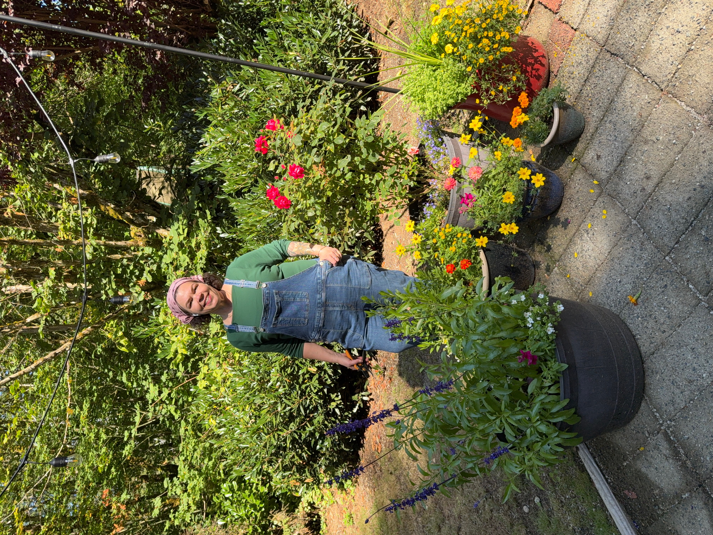
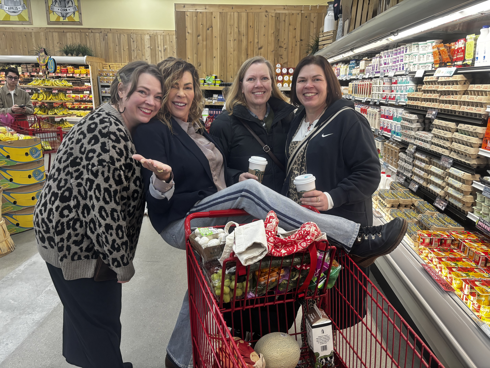
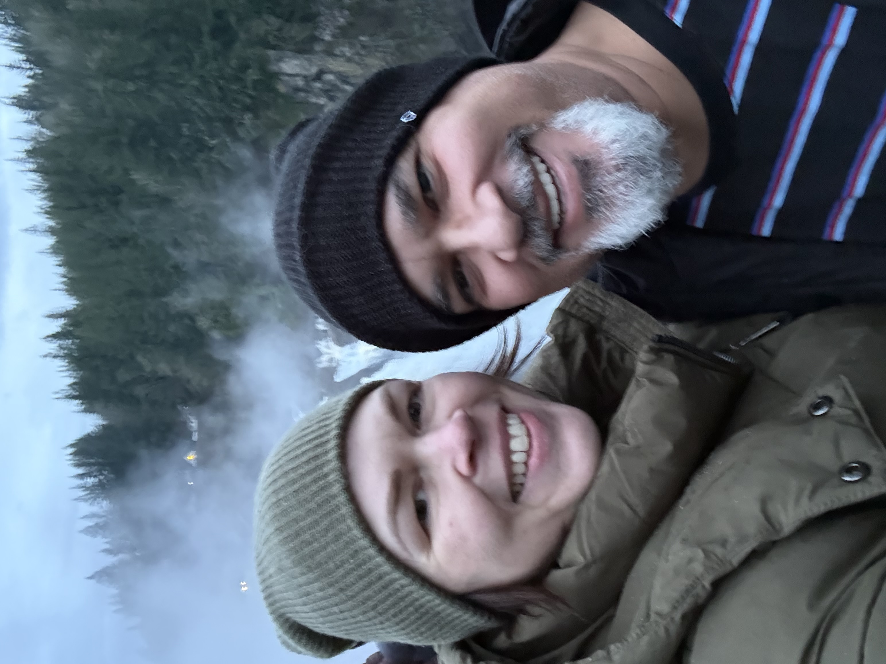

About Heather
Heather is someone who finds meaning in family, creativity, and making the spaces around her feel like home.
She enjoys spending time with the people she loves, working on projects around her home, and finding ways to enjoy the outdoors.
Family
Family is an important part of Heather's life. She enjoys spending time with the people closest to her and creating memories together. Whether it is a special gathering or an ordinary day, these moments are meaningful to her.

Family Connections
Heather values the relationships she has with her family. Spending time with her sisters and other loved ones gives her opportunities to connect, laugh, and make lasting memories.
Home & Creativity
Heather enjoys creating a comfortable and welcoming home. Her interest in home design gives her an opportunity to express her creativity while making her surroundings feel personal and inviting.
For Heather, home is more than a place. It is a space where family and friends can gather, relax, and enjoy time together.
